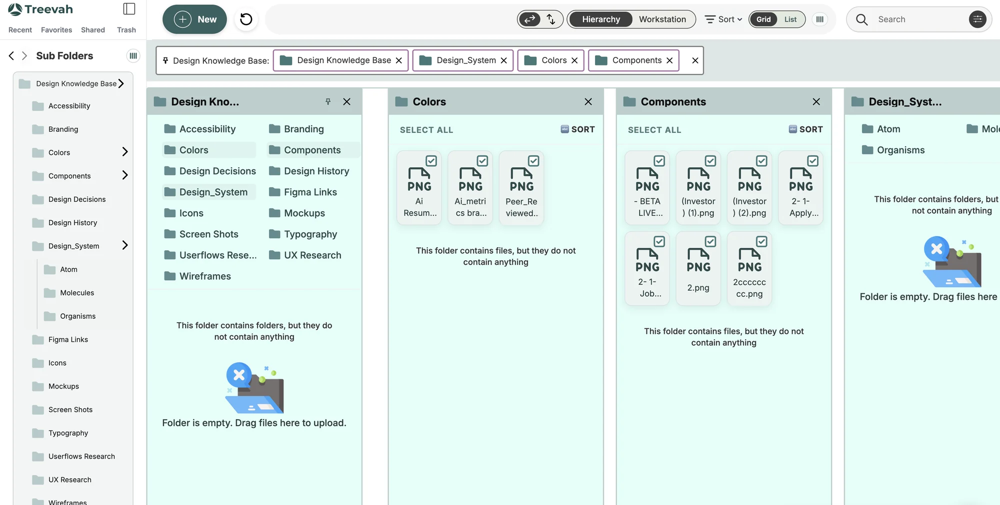
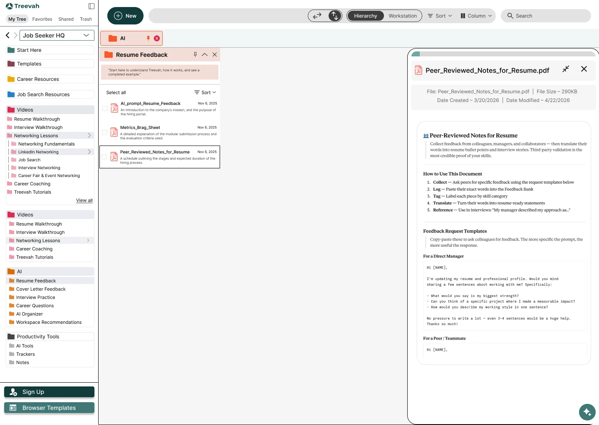
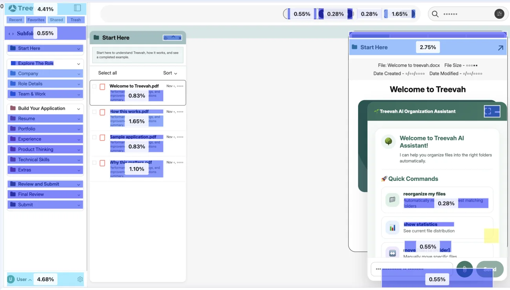
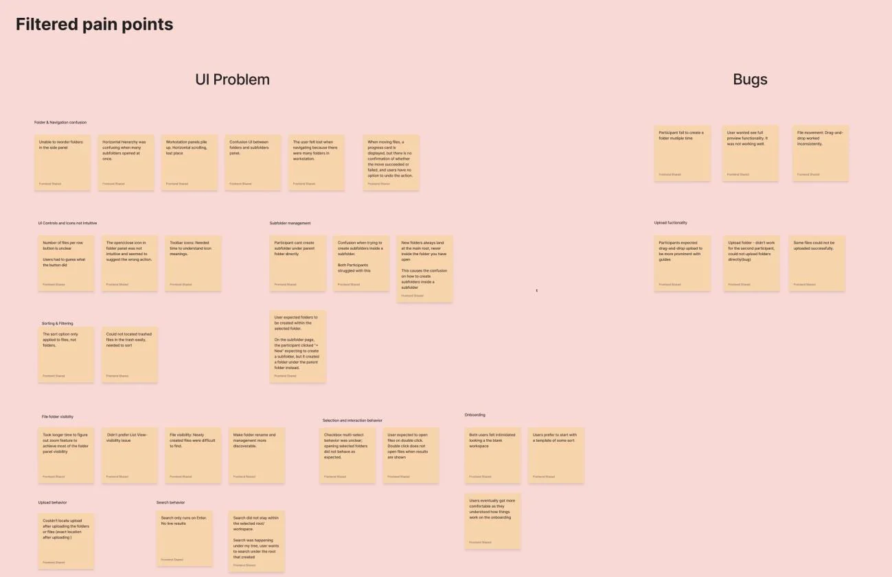
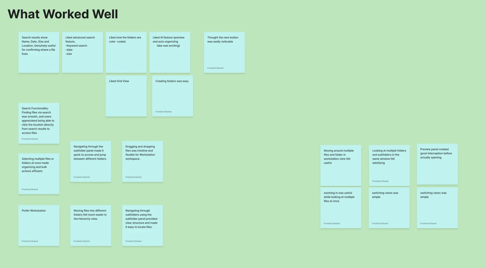
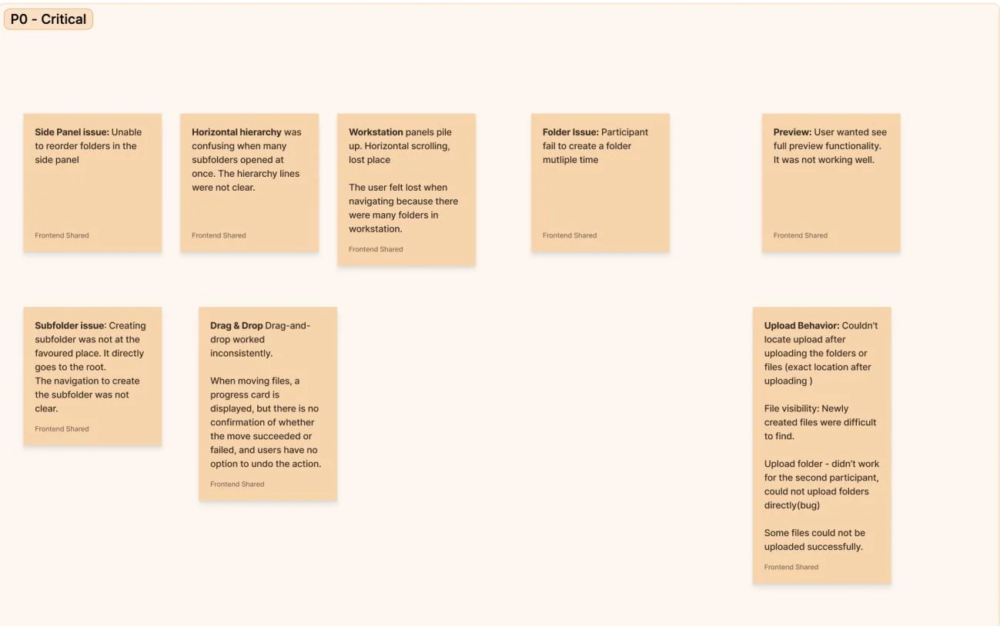
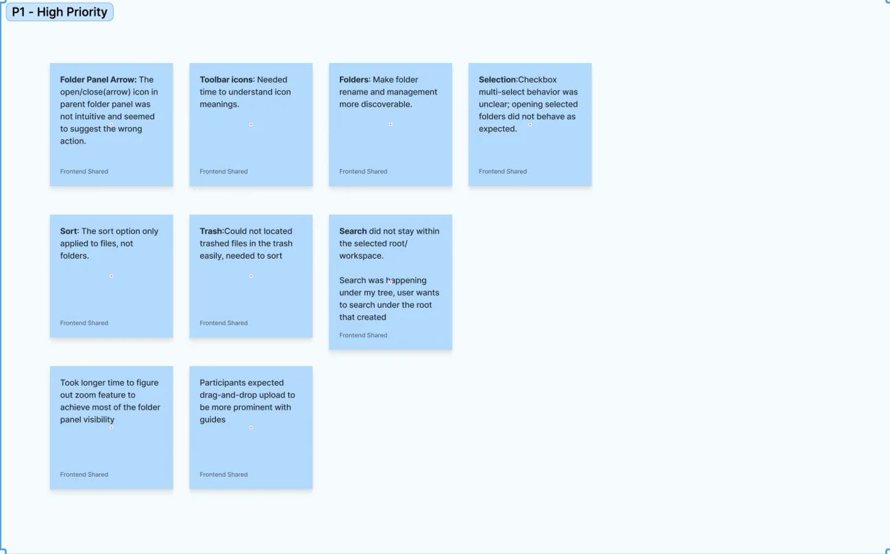
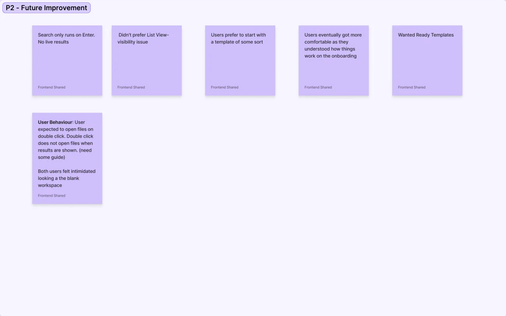

Balancing a new idea with everyday basics
Most file tools show one folder at a time. Treevah lays folders out visually, so you can see how everything relates and work across several at once. But people still need the basics to feel familiar: creating a folder where they expect it, moving files, finding their way around a big workspace, and knowing whether an action worked.
By summer 2026 the product was in its eighth alpha, and two questions were open: did the screens being built still match the design, and could new users make sense of the product without help? The challenge wasn’t a single redesign. It was supporting a product that kept changing while making those fundamentals clearer.
Designing while the product evolved
Our process ran in parallel, not in steps. While interfaces were being designed, the team was also preparing handoffs, checking what got built, testing with users and reading behavior data. Each stream fed the others.
- Design and refineInterfaces, components, interactions, visual consistency
- Collaborate and reviewHandoffs, checking builds against design, logging gaps
- Research and evaluateUsability testing, user feedback, behavior analytics
- Synthesize and prioritizeRecurring patterns, severity, recommendations for the next release
My contribution
The team shared much of the work. Here is what was mine.
Product and interface design
With the team, I created and refined interface concepts, wireframes and user flows, and built and maintained design system components and standards. I also brought ideas to feature brainstorms.
New features had a consistent base to build on.
Design-to-development collaboration
I prepared handoffs for engineering and worked with developers and the founder to keep what was built close to what was designed.
Fewer surprises between the design file and the product.
UI quality and consistency
I audited 766 components across the web and mobile apps against the design system and the handoff files. I also audited the AI assistants for trust, control and UX.
Design and engineering had one list of gaps to work from.
Research and evaluation
I wrote the plan for the Alpha 8 study, recruited participants and ran sessions, set up Microsoft Clarity and analyzed its recordings and click data. I contributed to the team’s synthesis and recommendations.
The team could rank fixes by evidence, not opinion.
Designing and refining the experience
Interface work was a team effort, so these screens show the product we designed and refined together rather than screens I made alone. My part was interface concepts, wireframes and flows, design system components, and handoffs to engineering. Shared with Treevah’s permission.






From design intent to implementation
I went screen by screen through the built product and logged every component: its level (atom, molecule, organism), its variants, whether it existed in the design system and in code, accessibility problems, and whether it matched the handoff file engineers worked from.
766 components logged across 84 screens, web and mobile.
51%
of the 585 web components didn’t match the handoff file engineers were building from.
The design system itself was mostly in place: 72% of web components were in it.
In the design system 585 web components
Matches the handoff file 585 web components
Accessibility, mobile 181 mobile components
The kinds of gaps I found
- Two versions of one thing. The sign-up card existed in two quite different implementations.
- Mixed styles. Filled and outlined text inputs were both in use, with no single design system input.
- Accessibility. Low-contrast placeholder and grey text came up across screens.
Status: documented, not resolved. Each gap went into a shared audit with a note on what to standardize. Which ones engineering fixed is outside what I can verify.
Auditing the AI assistants
Treevah’s AI can move and delete real files, so I audited it for trust and control, not just looks. I went through 31 checks across the file-organizing assistant, its interface, and a second Workspace Assistant that reads and summarizes. Each check got a simple read: good, a risk, or something to test.
Trust and control 12 checks
Design and UX 11 checks
Workspace Assistant 8 checks
- Asks permission before it runs, with Agree and Decline
- Each ability has its own toggle, so people can allow moves but block deletes
- Reports what it did: files scanned, moved and already sorted
- Projects and Recents keep a history of past actions
- It acts before you see the plan. Add an approve-before-apply step, showing the moves first. Top priority.
- It can delete folders. Confirm first and send deleted items to Trash.
- Model training is bundled into consent. Make training its own opt-in.
Still to test: can a reorganize be undone, does it pick the exact file, does it ask when a request is vague, and does it decline off-topic asks cleanly?
- A friendly empty state with example prompts, not a blank box
- Projects group chats by goal, like Applications or Portfolio
- Live loading steps make the wait feel active
- Type, buttons and spacing match the rest of Treevah
- Three AI features blur together. Name and separate them clearly, or combine them.
- A prompt chip shows raw brackets, “move [file] to [folder]”. Use a real example.
- Every chat is called “Organized Files”. Auto-name chats by what they did and when.
- No way to rate a reply. Add a simple thumbs up or down.
Still to test: keyboard access, focus order and grey-text contrast, and whether mobile needs the assistant at all.
- Answers link to the real files, so people can check the claim
- Shows its scope, like how many files it read
- Clear share roles: owner, can edit, can view
- Teammates can comment and react on answers
- Two assistants, two names. Make it obvious which one reads and which one moves files.
- Shared summaries could leak access. Check that a view-only teammate can’t see files they couldn’t open before.
Still to test: are the summaries accurate, and is it truly read-only? If it can act, it needs the same confirm and undo guards.
Understanding where the experience broke down
The Alpha 8 study was a focused research period within the three months. I wrote its plan: every new user started in the same empty workspace, as either a college student or a job seeker, and worked through four tasks. Each designer on the team ran sessions, recording screen, audio and think-aloud comments; the team brought in other sources too.
Each new user worked through four tasks
- Build a workspaceFrom a blank page, with no hints about folders or depth
- Organize real filesUpload about 20 realistic files and sort them
- Find them againRetrieve files, watching paths, search and wrong clicks
- Arrange the workspaceOpen folders, switch views, set it up for daily use
What the findings drew on
- 12Moderated sessions with new users
- 30Survey responses from existing users
- 871Sessions in the Clarity data; 47 watched as recordings
- Founder notesFrom months of everyday use
- AuditsHeuristic and component reviews
People valued seeing their work visually
- Observation
- People liked seeing several folders at once and how they relate, and each view suited a different job.
- Consequence
- The visual model is the reason to choose Treevah over a standard file manager.
- Implication
- Protect the views; explain when to use each rather than cutting any.
Evidence: 73% of survey respondents (22 of 30) said that if Treevah disappeared, what they’d miss most is managing multiple folders side by side.
If Treevah had one main view, which should it be? 30 existing users
- WorkstationChosen most for organizing information, side by side like Finder or File Explorer.
- Horizontal HierarchyChosen most for finding information quickly.
- Vertical HierarchyChosen most for understanding a project’s structure.
The basics were unreliable or confusing
- Observation
- New folders landed in the wrong place, uploads were hard to locate, and moves gave no clear confirmation or undo.
- Consequence
- People hesitated and lost trust before they ever reached the features that make Treevah different.
- Implication
- Fix creation, upload and move first, and confirm every action.
Evidence: in both the student and job seeker sessions, creating folders in the intended location was among the tasks that needed help or were abandoned, even though existing users rated folder creation the easiest task (4.70 of 5).
Navigation got harder as workspaces grew
- Observation
- As more panels and branches opened, people struggled to tell where they were and how folders related.
- Consequence
- Larger projects and coming back to earlier work felt slow and disorienting.
- Implication
- Add location cues like breadcrumbs, clearer parent-child lines, and ways to focus on one branch.
Evidence: tasks that depend on remembering where you are rated lowest in the survey.
How easy was it? Average rating from 1 to 5, 30 existing users, mostly software engineers
- Creating folders4.70
- Creating files4.37
- Organizing documents3.97
- Managing larger projects3.70
- Finding things later3.63
- Returning to earlier work3.53
More from the study
What worked, and worth protecting while fixing the rest:
- One canvas, many folders
Seeing folders and subfolders in one window made cross-folder tasks faster than in single-pane tools.
- The preview panel
The top-rated feature in the survey (4.31 of 5): people could check a file without losing their place.
- Search that shows location
Results with name, date, size and location, and a click that jumps straight to the folder.
- Color-coded folders
Colors gave people quick visual boundaries across a big tree.
People changed as they got comfortable. They started with search, single-pane browsing and local folders, like any file manager, then moved on to zooming, side-by-side folders, multi-item drag and drop, and jumping to locations from search.
College students
Explored more and treated Treevah as a home for coursework, notes and projects. Basic navigation worked, but they leaned on trial and error and weren’t sure what the Workstation was for.
Job seekers
Wanted speed and predictability: fast uploads and quick access to resumes and cover letters. They were less forgiving of unclear navigation, failed uploads and slow retrieval.
Both groups organized their materials once they got going, and both struggled to create folders in the right place and to use drag and drop with confidence. The workspace also got crowded: toolbars, panels and popups competed with the files themselves.
What the click data showed
I connected the test environment to Microsoft Clarity and did the analysis myself: session recordings, heatmaps, dead and rage clicks, and navigation paths. Clicks told a story that interviews alone missed.

- 9.5%of all clicks went to right-click menus, more than any toolbar button.
- 6.1%went to the rename dialog alone, a lot for a single modal.
- 6 clickson AI Summary, a feature people told us they were excited about.
- 61%of sessions had at least one rage click, and 28% had a dead click.

Click data covers a 30-day window, desktop only; 47 of the 871 sessions were reviewed as recordings.
Turning evidence into priorities
The team brought every source into one FigJam board, separated UI problems from bugs, and sorted issues by how badly they blocked people. That became 18 recommendations for Alpha 9, each with a measurable target for the next round of testing.
| Problem | Evidence | Priority | Proposed change |
|---|---|---|---|
| New folders land in the wrong place | Sessions in both groups; a founder note on repeated failed creation | Critical | Create folders where the user is, and show the path while they do it |
| Uploads fail or can’t be found | Sessions; survey requests; Clarity recordings | Critical | Confirm each upload, open and highlight the destination folder |
| People lose their place | Sessions; survey ratings for returning to work (3.53 of 5) | Critical | Clearer location cues, collapsible panels, easier-to-find zoom |
| Moves give no feedback | Sessions; Clarity dead and rage clicks | Critical | Show success or error after every move, and add undo |
| The workspace gets crowded | Sessions; survey ratings for larger projects (3.70 of 5, crowding with 5+ folders open) | High | Fewer always-on toolbars, panels and popups, so files stay the focus |
| Useful features are hidden | Sessions; Clarity click data | High | Clearer toolbar icons, tooltips, and help finding zoom |
| Interactions behave unexpectedly | Sessions; survey comments on multi-select | High | Align multi-select and file opening with familiar desktop patterns |
A distinctive feature is only valuable when people can reliably do the basic tasks around it.
The synthesis boards

Pain points. UI problems grouped by theme, kept apart from bugs. 
What worked. What to protect while fixing the rest. 
Critical. Critical issues: they block a core task or confuse most people. 
High. High-priority issues: they slow important work down. 
Future. Future improvements: polish, or issues that affect fewer people.
All 18 recommendations
Fix folder creation reliabilityCritical
Problem: Participants were unable to create folders successfully on repeated attempts, and failures did not provide clear feedback.
Proposed: Fix the underlying folder creation bug and add clear success and error states after every attempt to create a folder.
How we’d know it worked: ≥95% successful folder creation on the first attempt and zero silent failures during usability testing.
Make subfolder creation context-awareCritical
Problem: New subfolders were created at the root instead of inside the currently selected folder.
Proposed: Create folders within the currently selected location by default. Display the current folder path during creation and provide a dedicated New Subfolder action or context-aware + New button.
How we’d know it worked: ≥90% of participants create subfolders in the intended location on their first attempt.
Fix upload reliability and improve upload location feedbackCritical
Problem: Folder and file uploads were unreliable, and users could not easily determine where uploaded content was located.
Proposed: Fix upload reliability, clearly display the upload destination, automatically highlight newly uploaded content, and provide clear success/error messages with the exact upload location.
How we’d know it worked: 100% successful folder/file uploads in testing and users able to locate uploaded content within 10 seconds.
Make drag and drop reliable and reversibleCritical
Problem: Drag-and-drop file movement was inconsistent and did not clearly confirm whether an action succeeded or failed.
Proposed: Fix the drag-and-drop interaction, provide clear success/error feedback, and add an Undo option after file movement.
How we’d know it worked: ≥95% successful drag-and-drop actions and ≥90% of users correctly understand the result of the action.
Improve Workstation scalabilityCritical
Problem: Workstation panels accumulate horizontally, causing users to lose their place when navigating larger folder structures.
Proposed: Improve panel management, scrolling, and zoom visibility. Add clearer location indicators and consider focus or collapse functionality for complex workspaces.
How we’d know it worked: Users successfully navigate large folder structures without facilitator assistance and report reduced difficulty locating their current position.
Improve Horizontal Hierarchy clarityCritical
Problem: Horizontal hierarchy became difficult to understand when multiple subfolders were expanded.
Proposed: Improve connector lines, spacing, grouping, and visual hierarchy. Provide clear zoom and scrolling guidance for complex structures.
How we’d know it worked: ≥90% accuracy when participants identify parent-child relationships in usability testing.
Restore full preview functionalityCritical
Problem: Users expected a complete preview experience, but preview functionality was unreliable.
Proposed: Fix the underlying preview bug and ensure supported file types reliably display previews within Treevah.
How we’d know it worked: ≥95% successful preview attempts for supported file types.
Enable side panel folder reorderingCritical
Problem: Users could not reorder folders within the side panel.
Proposed: Add drag-and-drop folder reordering within the side panel.
How we’d know it worked: ≥90% successful folder reordering without assistance
Clarify folder panel expand and collapse controlsHigh
Problem: The folder panel arrow suggested the wrong action and was not intuitive.
Proposed: Align the arrow direction with standard UI conventions and add a tooltip explaining the resulting action.
How we’d know it worked: ≥90% of participants correctly interpret the control during usability testing.
Make folder rename and management more discoverableHigh
Problem: Users could not easily locate folder rename and management actions.
Proposed: Provide consistent folder actions through hover controls, right- click/context menus, and inline rename. Maintain the same interaction pattern across the Side Panel, Workstation, and Hierarchy View.
How we’d know it worked: ≥90% of users successfully rename a folder without assistance.
Clarify multi-select behaviorHigh
Problem: Checkbox selection behavior was unclear, particularly when selected folders were opened.
Proposed: Make selection states more visually obvious and provide a persistent selection count and contextual action bar.
How we’d know it worked: Zero critical selection errors during usability testing.
Extend sorting to foldersHigh
Problem: The Sort function applied to files but not folders.
Proposed: Extend sorting to folders and clearly communicate what content is being sorted in the left panel.
How we’d know it worked: Users successfully sort both folders and files without confusion.
Improve trash discovery and recoveryHigh
Problem: Users had difficulty finding deleted files in Trash.
Proposed: Display recently deleted items first, show their original location, and provide search/filtering within Trash.
How we’d know it worked: Reduce the time required to locate deleted files by at least 50%.
Make zoom easier to discoverHigh
Problem: Users took considerable time to discover the zoom functionality despite finding it useful.
Proposed: Make zoom a clearly visible Workstation control and support standard keyboard shortcuts. Consider contextual guidance during the first session.
How we’d know it worked: ≥80% of users discover and use zoom without facilitator assistance.
Strengthen drag and drop upload guidanceHigh
Problem: Participants expected drag-and-drop upload to be more prominent and easier to understand.
Proposed: Add a visible drop zone, show the destination during drag, and introduce drag-and-drop upload during onboarding.
How we’d know it worked: ≥90% of participants successfully complete drag-and-drop upload without assistance.
Add live search resultsFuture
Problem: Search only returned results after the user pressed Enter.
Proposed: Add live search suggestions/results while maintaining Enter as the option for a full results view.
How we’d know it worked: Reduced average time required to locate a file.
Standardize file opening across viewsFuture
Problem: Double-click behavior was inconsistent between views.
Proposed: Make double-click consistently open files wherever files are displayed, including Search, Grid, Workstation, and Hierarchy views.
How we’d know it worked: ≥95% consistent file-opening behavior across views.
Create a short first-time user onboardingFuture
Problem: Users required time and repeated interaction to understand Treevah’s organizational model.
Proposed: Create a short, skippable onboarding covering the core concepts: Roots and Branches, Workstation navigation, the three views, and zoom. Pair this with clearer empty states and a recommended first action.
How we’d know it worked: Lower time to first successful action, higher first-session task completion, and fewer onboarding-related questions during usability testing.
Is it ready for Beta?
The report rated 13 areas. The concept was ready; the basics weren’t, so the team recommended a controlled Beta after the critical fixes.
Ready 1
- Folder organization
Partly ready 8
- Product clarity
- Navigation
- Authentication
- Public features
- Mobile experience
- Accessibility
- Performance perception
- User confidence
Not ready 4
- Core file workflows
- Preview and download
- Error handling
- Usability blockers
What the work produced
Delivered
- Interface concepts, wireframes and flows, with the team
- Design system components and engineering handoffs
- A 766-component implementation audit
- An AI assistant audit with a test script
- The Alpha 8 study plan and Clarity analysis
- A research report with 18 recommendations
Informed
- Which fixes to treat as critical before Beta
- A controlled, staged approach to Beta
- Starter templates as an answer to the blank workspace
Still to validate
- Whether the recommended fixes were built
- Whether they met the targets set for the next test
- The open questions from the AI audit
The evidence shows what we recommended and prioritized. It doesn’t show that every change shipped or improved outcomes, so I haven’t claimed that.
What I learned
Design is continuous. On a product that changes every release, decisions get revisited as builds and feedback reveal new limits.
Execution matters as much as intent. Half the web components no longer matched handoff. A well-designed screen can’t deliver if what ships drifts from it.
Research helps a team choose. People said they loved AI Summary, but it got six clicks in a month. Pairing sessions with click data showed what to fix first.
Start studies from a blank page. Asking people to build their own workspace showed where onboarding broke down, which a guided demo would have hidden.
Some internal details are left out under NDA. I’m happy to walk through the work. Email me